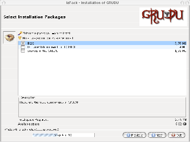
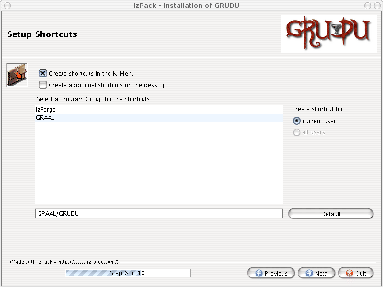

The first one corresponds to the selection of the different ``packages''
you want to install. Three packages are available:
- The base package contains the software and the mandatory libraries (It is required).
- The documentation package corresponds to the User's Manual and the JavaDoc of GRUDU.
- The source code of GRUDU.
Figure 2.1:
Installation packages selection
|

|
If you have an Unix-like operating system (Linux or BSD variants) or
Windows, the seventh panel will allow you to put shortcuts on your desktop and
also in the program group if you want to.
Figure 2.2:
Shortcuts configuration
|

|
David Loureiro
2007-07-04